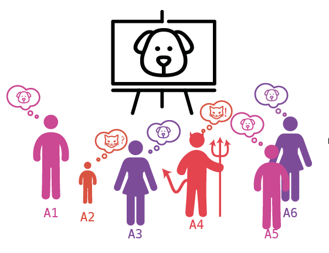
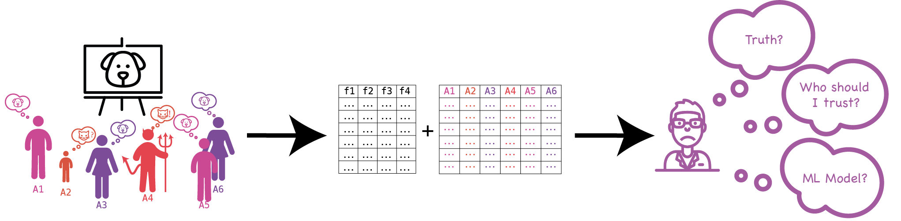

Truth Inference in Crowdsourcing
Crowdsourcing
What? Why?
From Wikipedia
Crowdsourcing is a sourcing model in which individuals or organizations obtain goods and services, including ideas, voting, … from a large, relatively openand often rapidly-evolving group of participants. Currently, crowdsourcing typically involves using the internet to attract and divide work between participants to achieve a cumulative result.
Amazon Mechanical Turk (MTurk)
Reference: Course of Crowdsourcing Crowd-AI Systems
Motivation
Can we trust annotators?
- Noisy labels from the annotator
- Inconsistent labels from annotators
- Missing and sparse labels
- Redundant annotators

Reference: Machine learning from crowds
Properties of Crowdsourcing
- Huge amount of crowdsourcing data
- Inevitable noise of labels from annotators
- Unknow ground truth and expertise of annotators
Goal: Obtain reliable info. in crowdsourcing.
Truth Inference
- Definition: Given different labels of instances collected from annotators, the target is to infer the ground truth of each instance.
- Challenges:
- Quality of annotators
- Sparse and missing label
- Cost of annotation
- Difficulty of instances
- Different type of instance
- Malicious annotators

List of existing methods
Classified by Work/Annotator quality
- Worker Probability: prob. of the correct label by annotators
- Confidence Interval: prob. with confidence interval by #labels
- Confusion Matrix: confusion matrix per annotator
Classified by Object functions
- PGM, Probabilistic Graphical Model
- Optimization, self-defined objective function
In this introduction, we focus on majority voting and some PGMs.
Simple Solution: Majority Voting
Take the answer that is cumulated/ aggregated by the majority (or most) of annotators ().
e.g. For instance ,
For Binary classification
Disadvantage: quality of annotators. And it could happens “三人成虎”.
Mainstream Solution: Learning From Crowds
Unified framework in existing works:
Interactive learn ground truth and quality of annotators.
- Infer the ground truth from instances
- Infer the quality of annotators given the ground truth
Usually using EM algorithm as the approach.
General steps:
- Design probabilistic model with latent variable
- Find the lower bound of log-likelihood estimation
Reference: Stanford CS229 Lecture notes
Learning From Data
Give different graphic models.
Learning from multiple annotators: A Survey
Summary
- The Power of the Collective
- The accuracy of truth inference models increase with #answers.
- The accuracy of truth inference models improvement is significant with few answers, and is marginal with more answers.
- Most methods are similar, except for Majority Voting.
- Which method is the best?
- Majority Voting if sufficient data (each instance collects labels)
- Rayker et.al if limited data (relative stable method)
- Existing methods are not stable across different datasets
- There is no method that outperforms others consistently.
- Redundancy of annotators: The accuracy of models increases with small redundancy, and keeps stable for a large redundancy.
- The key to truth inference is to know annotator’s quality.
- They propose unified framework of #17 existing works.
- They propose the metrics, and compare different instance types, annotator models and objectives.
- They publish #5 real-world dataset for future work.
Conclustion
Truth inference problem is not fully solved.
Future works
- Tasks types: image tag, translation, …
- Data redundancy and task assignment: estimate the data redundancy with stable quality to reduce cost of annotations.
- Benchmark: develop benchmarks and evaluation measures in crowdsourcing.
-
Incorporation of features
- They doesn’t consider the features in this work.
-
Unified framework is good?
- Their framework doesn’t peek out suspicious instances.
- Most of the existing methods are poor in sparse and missing data.